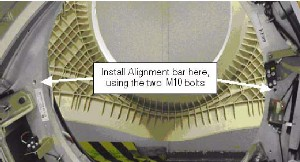
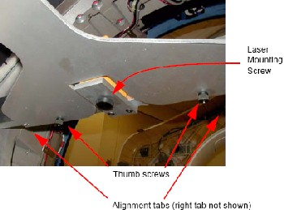
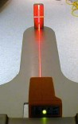

Operating Documentation
Direction 5193574-800, Rev# 22
LightSpeed 7.X Service Methods
Module Version 1.0, Version Date 4/22/10
Operating Documentation |
| Labor: | 2 people; 0.5 man-hour |
| Tools: | Standard Tool Kit |
| Laser Alignment Kit (P/N 2572090) | |
| 9” Level | |
| Masking Tape |
| ||||
| Potential for injury. | ||||
| DO NOT look into the laser. | ||||
| Use appropriate safety procedures when working with lasers. |
1. Remove the gantry dollies by removing the three dolly bolts. |  |
2. Manually rotate the gantry until the collimator faceplate is at the 5 o'clock position. | |
3. Install the alignment bar and level the bar by rotating the gantry. | |
4. Attach the laser centering plate to the alignment bar. Then attach the laser to the alignment bar and turn it on using the controls on the back. |  |
5. Set the beam profile to "|" and align the laser so that the "|" beam shines through the center of the alignment sight mounted on the end of the alignment plate. |  |
6. Secure the laser to the alignment bar. Use caution when tightening as the laser may move. | |
7. Verify that the alignment bar is still level. Place a piece of masking tape on the back wall and mark a line on the tape where the laser appears. | |
8. Remove the laser centering plate and store it in the alignment case. | |
9. Install the table cradle laser alignment plates. | |
10. Gantry Zero Tilt: Place the digital level on the rear corner of the gantry and check that the gantry is at 90 degrees +/- 0.3 degrees. |